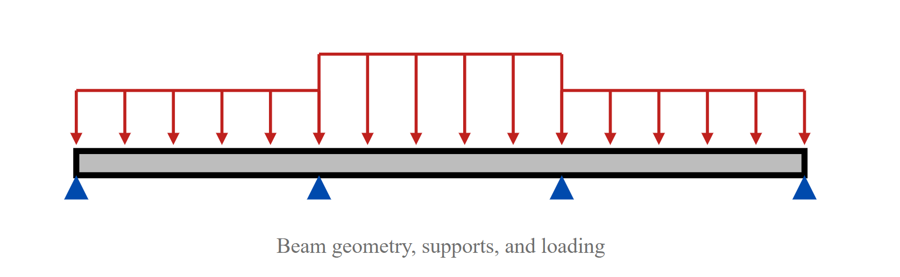

Drawing on a Canvas#
Well-written hand-calcs usually have helpful drawings and graphics to illustrate important aspects of the geometry or calculation. That’s where a Canvas comes in!
The Canvas class allows you to programmatically draw out any part of your calculation and include the graphic in your calculation report.
Examples#
Here are some examples of things you may need to draw:
Concrete beam cross-section#

The source code that generated this image:
1# Define beam geometry
2width = 10
3height = 16
4
5# Define reinforcement properties
6cover = 1.5
7num_long_bars = 4
8long_bar_radius = 0.875 / 2
9stirrup_diameter = 0.375
10stirrup_bend_radius = 3 * stirrup_diameter
11stirrup_hook = 3 * stirrup_diameter
12
13# Set up the canvas
14canvas = Canvas(width, height, caption="Concrete Beam Section", scale=30, default_element_stroke_width=0)
15
16# Draw the beam outline
17beam_outline = Rectangle(0, 0, width, height, fill="#bdbdbd")
18canvas.add(beam_outline)
19
20# Add some stirrups for transverse reinforcement (with hooks)
21stirrups = Polyline(
22 points=[
23 (cover + stirrup_hook, cover + stirrup_hook + stirrup_bend_radius * 1.3),
24 (cover, cover + stirrup_bend_radius * 1.3),
25 (cover, cover),
26 (cover + stirrup_hook, cover),
27 (width - cover, cover),
28 (width - cover, height - cover),
29 (cover, height - cover),
30 (cover, cover + stirrup_hook),
31 (cover, cover),
32 (cover + stirrup_bend_radius * 1.3, cover),
33 (cover + stirrup_hook + stirrup_bend_radius * 1.3, cover + stirrup_hook),
34 ],
35 corner_radius=stirrup_bend_radius,
36 stroke_width=stirrup_diameter,
37 stroke="black",
38)
39canvas.add(stirrups)
40
41# Add longitudinal reinforcement (blue circles)
42long_bar_starting_x = cover + stirrup_diameter + long_bar_radius
43long_bar_spacing = (width - 2 * long_bar_starting_x) / (num_long_bars - 1)
44long_bar_y = height - cover - stirrup_diameter / 2 - long_bar_radius
45
46for i in range(num_long_bars):
47 canvas.add(
48 Circle(
49 long_bar_starting_x + i * long_bar_spacing,
50 long_bar_y,
51 long_bar_radius,
52 fill="#004aad",
53 )
54 )
55
56# Add placement bars for transverse reinforcement
57placement_bar = cover + stirrup_diameter * 1.5
58canvas.add(Circle(placement_bar, placement_bar, stirrup_diameter / 2, fill="black"))
59canvas.add(Circle(width - placement_bar, placement_bar, stirrup_diameter / 2, fill="black"))
Beam support and loading scheme#
The source code that generated this image:
1red = "#bf211e"
2
3# Helper function to draw a pin support at a given location
4def create_pin_support(x, y):
5 return Polyline(
6 points=[(x, y), (x + 1, y + 2), (x - 1, y + 2), (x, y)],
7 stroke_width=0,
8 fill="#004aad",
9 )
10
11# Helper function to draw a loading arrow
12def create_load_arrow(x, y, height):
13 return Line(
14 x, y - height, x, y, stroke_width=0.25, stroke=red, marker_end=ArrowMarker()
15 )
16
17# Helper function to draw a cap line
18def create_load_cap_line(x1, x2, y):
19 return Line(x1, y, x2, y, stroke_width=0.25, stroke=red)
20
21# Set up the canvas
22canvas = Canvas(
23 100,
24 20,
25 caption="Beam geometry, supports, and loading",
26 full_width=True,
27)
28
29# Draw the beam
30canvas.add(Rectangle(20, 13, 60, 2, stroke_width=0.5, fill="#bdbdbd"))
31
32# Draw the supports
33canvas.add(create_pin_support(20, 15))
34canvas.add(create_pin_support(40, 15))
35canvas.add(create_pin_support(60, 15))
36canvas.add(create_pin_support(80, 15))
37
38# Draw the arrows for the loading diagram
39arrow_count_per_section = 6
40spacing = 20 / (arrow_count_per_section - 1)
41for i in range(arrow_count_per_section):
42 canvas.add(create_load_arrow(20 + spacing * i, 12, 4))
43 canvas.add(create_load_arrow(40 + spacing * i, 12, 7))
44 canvas.add(create_load_arrow(60 + spacing * i, 12, 4))
45
46# Draw the cap lines for the loading diagram
47canvas.add(create_load_cap_line(20, 40, 8))
48canvas.add(create_load_cap_line(40, 60, 5))
49canvas.add(create_load_cap_line(60, 80, 8))
API docs#
Canvas#
- class efficalc.canvas.Canvas(width: float, height: float, caption: str = None, centered: bool = True, full_width: bool = False, background_color: str = None, border_width: float = None, border_color: str = None, scale: float = 1.0, default_element_fill: str = 'none', default_element_stroke: str = 'black', default_element_stroke_width: float = 1)#
Represents a canvas to hold and manage multiple SVG elements. This is the backdrop of the drawn figure. Coordinate system starts in the top left corner of the canvas with x-axis pointing right and y-axis pointing down.
- Parameters:
width – Width of the canvas drawing space.
height – Height of the canvas drawing space.
background_color – Background color of the canvas, defaults to “white”.
border_width – Width of the border around the canvas, defaults to 0.
border_color – Color of the border around the canvas, defaults to “black”.
caption – Caption for the canvas, defaults to None.
centered – Whether to center the canvas, defaults to True.
full_width – Whether to make the canvas full width, defaults to False.
scale – Scale the display size of the canvas, defaults to 1.
default_element_fill – Default fill color for elements, defaults to “none”.
default_element_stroke – Default stroke color for elements, defaults to “black”.
default_element_stroke_width – Default stroke width for elements, defaults to 1.
- add(element: CanvasElement) None#
Adds an element to the canvas.
- Parameters:
element – The element to be added.
- to_svg() str#
Converts the canvas and its elements to their SVG representation.
- Returns:
SVG representation of the canvas.
Canvas Elements#
- class efficalc.canvas.Circle(cx: float, cy: float, r: float, **kwargs)#
Represents a circle.
- Parameters:
cx – X coordinate of the circle center.
cy – Y coordinate of the circle center.
r – Radius of the circle.
kwargs – Additional properties such as fill, stroke, and stroke_width.
- to_svg() str#
Converts the element to its SVG representation.
- Returns:
SVG representation of the element.
- class efficalc.canvas.Ellipse(cx: float, cy: float, rx: float, ry: float, **kwargs)#
Represents an ellipse.
- Parameters:
cx – X coordinate of the ellipse center.
cy – Y coordinate of the ellipse center.
rx – X radius of the ellipse.
ry – Y radius of the ellipse.
kwargs – Additional properties such as fill, stroke, and stroke_width.
- to_svg() str#
Converts the element to its SVG representation.
- Returns:
SVG representation of the element.
- class efficalc.canvas.Line(x1: float, y1: float, x2: float, y2: float, marker_start: Marker = None, marker_end: Marker = None, **kwargs)#
Represents a line.
- Parameters:
x1 – X coordinate of the start point.
y1 – Y coordinate of the start point.
x2 – X coordinate of the end point.
y2 – Y coordinate of the end point.
marker_start – Marker to display at the start, defaults to None.
marker_end – Marker to display at the end, defaults to None.
kwargs – Additional properties such as stroke and stroke_width.
- to_svg() str#
Converts the element to its SVG representation.
- Returns:
SVG representation of the element.
- class efficalc.canvas.Polyline(points: List[Tuple[float, float]] | List[List[float]], corner_radius: float = 0, marker_start: Marker = None, marker_end: Marker = None, marker_mid: Marker = None, **kwargs)#
Represents a polyline with optional corner rounding.
- Parameters:
points – A list of (x, y) tuples or lists defining the polyline points, i.e. [(0, 0), (50, 50), (100, 0)].
corner_radius – The radius of the rounded corners if >0, defaults to 0.
marker_start – Marker to display at the start, defaults to None.
marker_end – Marker to display at the end, defaults to None.
marker_mid – Marker to display at midpoints, defaults to None.
kwargs – Additional properties such as fill, stroke, and stroke_width.
Note
If the requested radius does not fit for any corner of the polyline, that corner will not be rounded at all.
- to_path_commands() str#
Converts the polyline to an SVG path command string, applying a corner radius for rounded corners if specified.
- Returns:
SVG path string representation of the polyline.
- Return type:
str
- to_svg() str#
Converts the element to its SVG representation.
- Returns:
SVG representation of the element.
- class efficalc.canvas.Rectangle(x: float, y: float, width: float, height: float, rx: float | None = 0, ry: float | None = 0, **kwargs)#
Represents a rectangle.
- Parameters:
x – X coordinate of the top-left corner.
y – Y coordinate of the top-left corner.
width – Width of the rectangle.
height – Height of the rectangle.
rx – Horizontal radius of the corners, defaults to 0.
ry – Vertical radius of the corners, defaults to 0.
kwargs – Additional properties such as fill, stroke, and stroke_width.
- to_svg() str#
Converts the element to its SVG representation.
- Returns:
SVG representation of the element.
Line/Polyline Markers#
- class efficalc.canvas.ArrowMarker(reverse: bool = False, orientation: Literal['auto', 'auto-start-reverse'] | float = 'auto', **kwargs)#
Creates an arrow marker for a line or polyline.
- Parameters:
reverse – Whether the marker direction should be reversed, defaults to False.
orientation – The orientation of the marker, defaults to “auto”.
kwargs – Additional properties such as fill, stroke, stroke_width, and size.
- to_svg() str#
Converts the element to its SVG representation.
- Returns:
SVG representation of the element.
Base Classes#
- class efficalc.canvas.CanvasElement(fill: str = None, stroke: str = None, stroke_width: float = None)#
Base class for SVG elements.
- Parameters:
fill – Fill color of the element, defaults to None.
stroke – Stroke color of the element, defaults to None.
stroke_width – Stroke width of the element, defaults to None.
- get_common_svg_style_elements() str#
Returns the common style elements for the svg element.
- to_svg() str#
Converts the element to its SVG representation.
- Returns:
SVG representation of the element.
- class efficalc.canvas.Marker(fill: str = 'context-stroke', stroke: str = 'none', stroke_width: float = None, size: float = 1)#
Base class for line and polyline end markers (arrows, circles, etc.)
- Parameters:
fill – Fill color of the marker, defaults to “context-stroke”. Marker fill can be set to “context-fill” or “context-stroke to match the fill or stroke of the element this marker is connected to.
stroke – Stroke color of the marker, defaults to “none”. Marker stroke can be set to “context-stroke” or “context-fill” to match the fill or stroke of the element this marker is connected to.
stroke_width – Stroke width of the marker, defaults to None.
size – Size scale of the arrow marker relative to the stroke-width, defaults to 1.